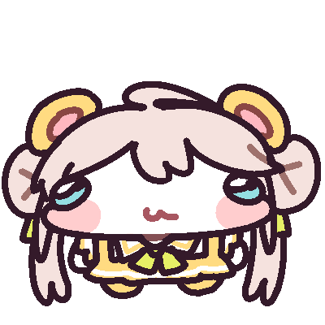
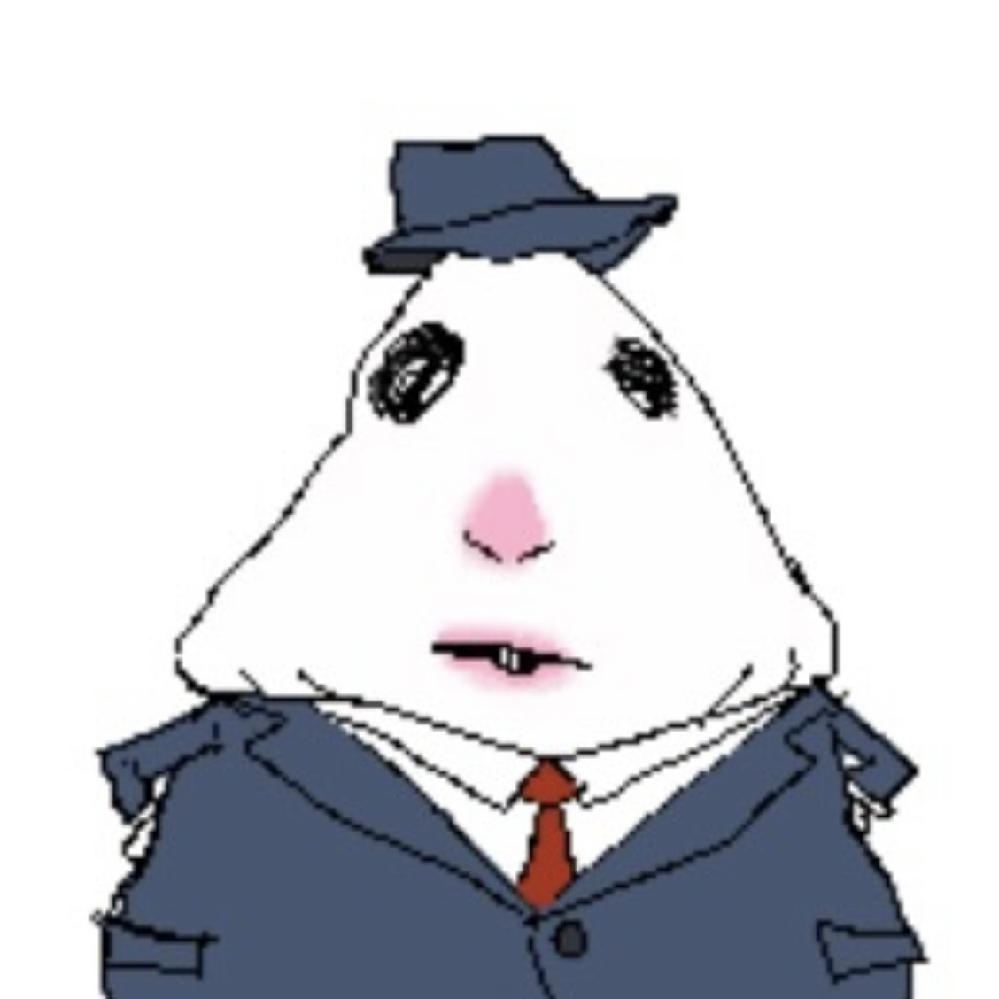

MEET THE TEAM
Team Members
FORK 프로젝트는 여섯 명의 팀원이 각자의 담당 업무를 나누어 진행합니다. 각 페이지의 목적에 맞게 내용을 구성하고, 마지막에는 하나의 사이트처럼 자연스럽게 연결하는 것을 목표로 합니다.
각자의 역할을 바탕으로 함께 만드는 FORK
김준휘
메인 페이지
사이트에 처음 접속했을 때 보이는 메인 화면과 첫 화면 구성을 담당. 팀의 전체적인 분위기와 프로젝트의 핵심 내용을 방문자가 빠르게 이해할 수 있도록 화면의 흐름을 정리.
- 메인 화면 구성
- 첫 화면 문구 및 콘텐츠 배치
- 다른 메뉴로 이동하는 연결 구성
황세윤
팀 소개
FORK라는 팀의 이름과 소개, 제작 목적 및 프로젝트 목표를 구성. 팀이 어떤 방향으로 프로젝트를 진행하는지 알기 쉽게 전달하는 내용을 정리.
- 팀 소개 내용 작성
- 제작 목적과 목표 정리
- 팀의 특징과 작업 방향 설명
임세윤

팀원 프로필
팀원별 프로필과 관련 정보를 소개하는 영역을 담당. 여섯 명의 담당 업무를 구분해 방문자가 각 팀원의 역할을 쉽게 확인할 수 있도록 구성.
- 팀원별 프로필 구성
- 이름과 담당 역할 정리
- 팀원 정보의 가독성 확인
정예진

프로젝트 갤러리
프로젝트 목록과 이미지, 설명을 보여주는 영역을 구성. 프로젝트별 핵심 내용을 카드 형태로 정리해 전체 작업을 한눈에 살펴볼 수 있도록 합.
- 프로젝트 목록 구성
- 이미지와 설명 배치
- 갤러리 화면 정리
송준혁
활동 기록
팀의 진행 과정과 주요 활동 내용을 정리. 기획, 개발, 테스트 단계에서 어떤 작업을 진행하는지 순서에 따라 확인할 수 있도록 기록.
- 팀 활동 과정 정리
- 주요 작업 단계 기록
- 진행 내용의 순서와 표현 점검
박찬진
공통 디자인 / 메뉴
사이트 전체에서 공통으로 사용하는 디자인과 헤더, 푸터 및 메뉴를 구성. 각 페이지가 서로 다른 사람이 만든 것처럼 보이지 않도록 공통된 화면 구조와 스타일을 적용.
- 공통 헤더와 푸터 구성
- 메뉴 및 페이지 이동 연결
- 공통 CSS와 반응형 화면 정리